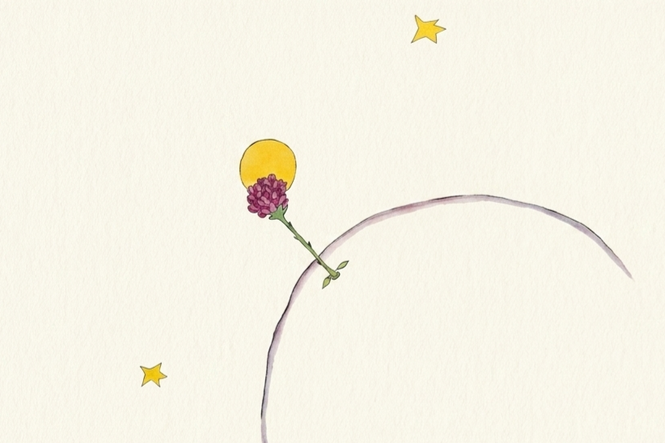
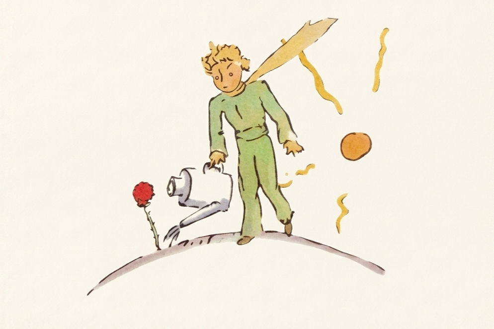
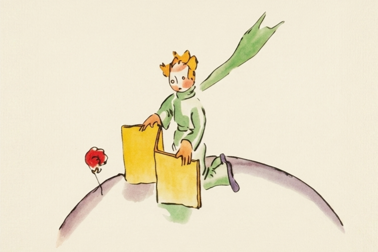
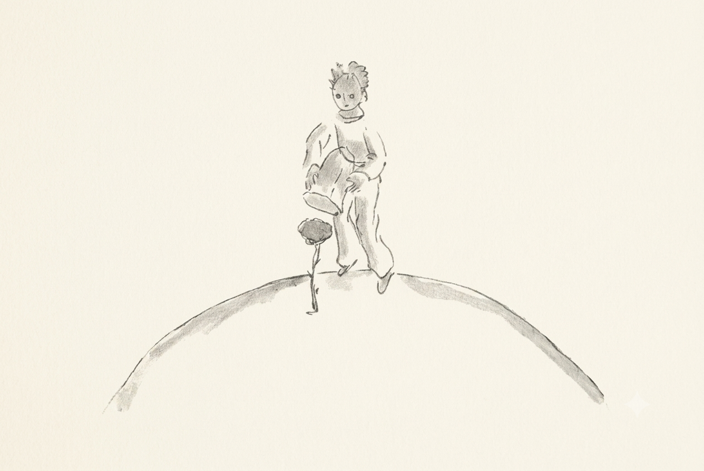

장미는 어린왕자에게
가장 소중한 존재였습니다.
아름답고 사랑스러웠지만,
장미는 조금 까다롭고 솔직하지 못한 꽃이었습니다.
“찬바람은 싫으니 유리 덮개를 씌워줘.”
“목이 마르니 물을 가져다줘.”

정말 아름다우시군요.
“정말 아름다우시군요!”
“그렇죠?”
꽃이 새침하게 대답했다.
“저는 태양과 함께 태어났답니다…”
어린왕자는 장미가 그다지 겸손하지 않다는 것을 알아챘다.
하지만 그 자태는 너무나 감동적이었다!

아침 식사 시간이 된 것 같아요.
“아침 식사 시간이 된 것 같은데요.”
장미가 덧붙였다.
“제 생각을 어떻게 해주지 않으시겠어요….”
당황한 어린왕자는 신선한 물이 담긴
물뿌리개를 찾아와 물을 주었다.

바람이 부는 건 질색이에요.
“바람이 부는 건 질색이에요.
혹시 바람을 막아 줄 만한 것이 없나요?”
‘바람이 질색이라니…
식물 치고는 운이 나쁘군.’
어린왕자는 생각했다.
‘정말 까다로운 꽃이야…’

유리 덮개는요?
“저녁에는 유리 덮개를 덮어주세요.
이곳은 너무 춥군요. 설비가 엉망이에요.
내가 살던 곳에서는…”
장미는 말을 멈췄다.
씨앗 형태로 왔으니 다른 세상에 대해 알 리가 없었다.
빤히 들여다보이는 거짓말을 하려다가 무안해진 꽃은 어린왕자가 죄책감을 느끼도록 기침을 두세 번 해댔다.
“떠나기로 결심했으면
어서 가.”
🌹 “우물쭈물하지 마, 신경 쓰여.
떠나기로 결심했으면 어서 가.”
꽃은 우는 모습을 보이고 싶지 않았던 것이다.
그토록 자존심 강한 꽃이었다.
어린왕자는
‘이대로 별을 떠나면,
다시 돌아오지 못할지도 모른다.’
라는 생각을 하며,
장미와 인사를 나누었습니다.
서로를 사랑했지만,
서로를 이해하기에는 아직 미숙했습니다.
어린왕자는 장미를 아끼는 마음으로
정성을 다해 돌보았습니다.
신선한 물을 주고,
찬 바람을 막아 주고,
나비가 될 벌레 조금을 제외한
벌레를 잡아 주며
하루하루 함께 시간을 보냈습니다.
하지만 어린왕자는 장미의 작은 거짓말과
변덕스러운 말에 점점 지쳐 갔고,
장미 역시 자신의 마음을
서툴게만 표현할 뿐이었습니다.
결국 어린왕자는 장미를 떠나,
자신의 별을 벗어나는 여행을 시작합니다.
수많은 장미 중에서
왜 자신의 장미가 가장 소중했을까요?
여행을 떠난 어린왕자는
이후 아주 수많은 장미를 만나게 됩니다.
그럼에도 끝까지 자신의 장미를
가장 소중하게 생각했던 이유는 무엇이었을까요?
그 답을 찾기 위해,
이제 어린왕자와 함께 첫 번째 행성으로 떠나 보세요.
어린왕자의 다음 여행을
따라가보세요.
장미를 뒤로하고 떠난 어린왕자는
여러 행성을 여행하게 됩니다.
이제 어린왕자가 만난 행성을 따라
3층으로 올라가 보세요.
3층에서 QR을 찾아
스캔해 보세요.
3층에 도착하면
새로운 여행이 여러분을 기다리고 있습니다.